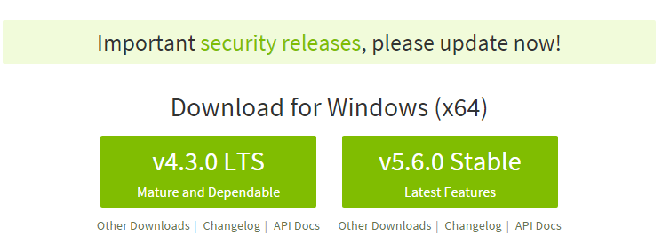
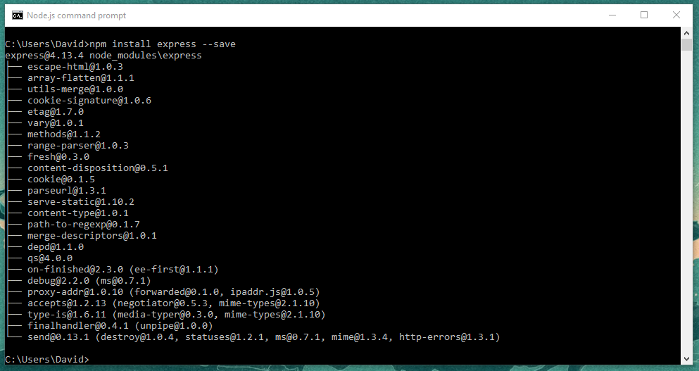
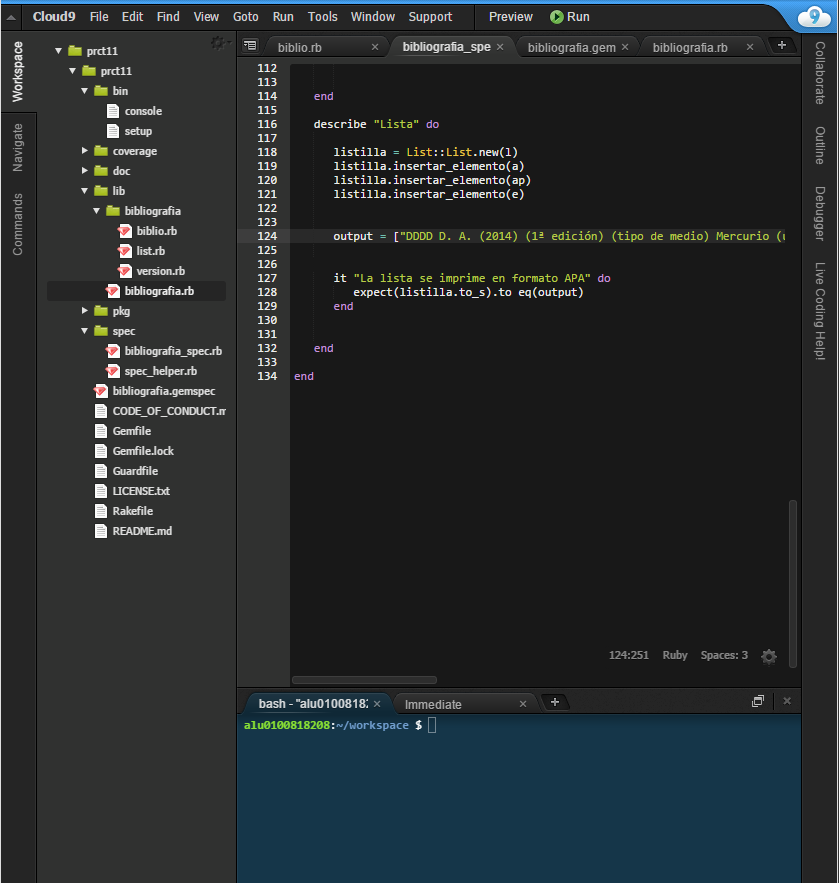

Tutorial de instalación de NodeJS, Express, GitHub, Cloud9, Atom y Markdown en Windows.
Instalación de NodeJS.
Éste intérprete de Javascript hace uso de un modelo de programación dirigida por eventos y de E/S sin bloqueo lo que lo convierte en una herramienta ligera y eficiente. Además, el paquete npm es el mayor ecosistema de librerias open source en el mundo.
Su instalación en windows es bastante sencilla. Lo primero es descargarnos el instalador en nuestro ordenador:

Luego seguimos los pasos del instalador hasta que haya terminado. Una vez finalizada la instalación ejecutamos el Node.js command prompt y nos debe salir algo así:
Instalación de Express.
Según sus creadores, express es una infraestructura de aplicaciones web Node.js mínima y flexible que proporciona un conjunto sólido de características para las aplicaciones web y móviles.
Para instalarla haremos uso de Node.js command prompt, donde escribiremos el siguiente comando:
npm install express --save
Tras lo cual nos debería salir lo siguiente por la consola:

Instalación de GitHub Desktop.
GitHub proporciona una herramienta en forma de aplicación que permite una organización cómoda de nuestros repositorios.
Para instalarla nos descargamos el .exe de la página web:
Una vez finalizada la instalación debemos iniciar sesión y ya tendremos todo listo para empezar a trabajar en el escritorio:
Cloud9.
Esta herramienta no es sino un IDE para el desarrollo de código en la nube. Debemos crearnos una cuenta en la misma para empezar a trabajar en ella.

Instalación Atom.
Es un editor de textos intuitivo y bastante facil de usar. Al igual que cualquier otra aplicación nos descargamos el instalador y seguimos los pasos.
Una vez instalado, podemos usarlo para editar el código de nuestros repositorios de GitHub Desktop.
Markdown.
Es un lenguaje de marcado ligero, que trata de conseguir la máxima legibilidad y facilidad de publicación tanto en suforma de entrada como de salida.
Sintaxis:
Encabezados
# Tipo H1
## Tipo H2
### Tipo H3
Tipografía
**Negrita**
*Cursiva*
> Citas
`Codigo`
Recursos

* [Links](https://example.com)
Listas
1. Lista 1
2. Lista 2
* Lista 1
* Lista 2